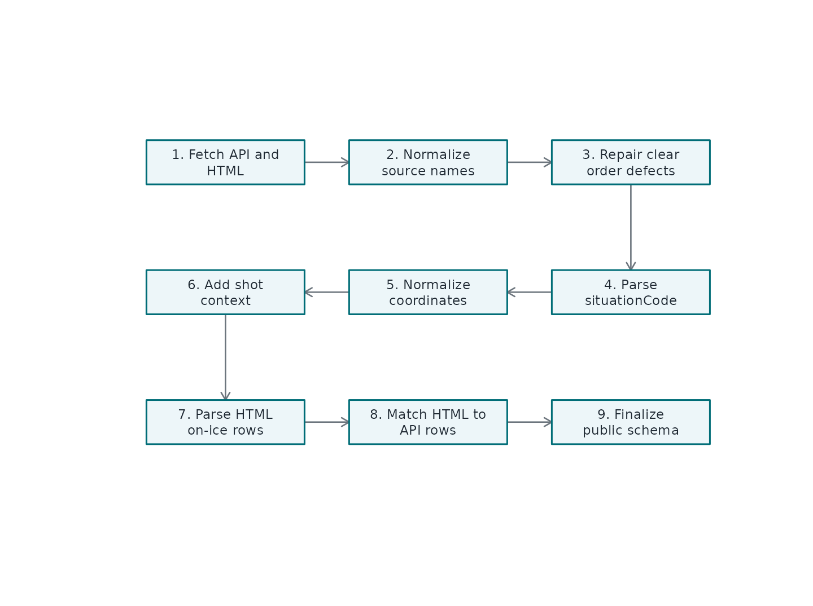

How the Play-By-Play Pipeline Works
Source:vignettes/play-by-play-pipeline.Rmd
play-by-play-pipeline.RmdWhy This Article Exists
The play-by-play functions are the package’s most opinionated tools. They do not simply flatten an NHL endpoint and hand the result back. They reconcile multiple public sources, repair a few known event-order problems, derive a large public schema, and add event-level on-ice player IDs from the official HTML report.
That makes gc_play_by_play() and
wsc_play_by_play() extremely useful, but it also means the
output deserves a mental model. This article is that model. It is
strictly informational: the goal is to explain what the pipeline trusts,
what it derives, what it refuses to infer, and where
shift_chart() fits.
Two Feeds, One Public Schema
gc_play_by_play() and wsc_play_by_play()
start from different event feeds, but both return a cleaned event table.
The source split looks like this:
| source | used_by | role |
|---|---|---|
| GameCenter API | gc_play_by_play(), game metadata for WSC | Authoritative event stream for GameCenter rows and common metadata. |
| World Showcase API | wsc_play_by_play() | Alternate event stream with UTC timestamps and fewer clip fields. |
| HTML play-by-play report | gc_play_by_play(), wsc_play_by_play() | Primary source for event-level on-ice goalie and skater IDs. |
| Stats shift-chart API | shift_chart() | Preferred source for player shift start/end clocks. |
| HTML shift reports | shift_chart() fallback | Fallback source for shift start/end clocks when stats API rows are missing. |
The important separation is identity versus timing. HTML play-by-play reports are used to recover who was on the ice for an event. Shift charts are used later to calculate how long those players had been on the ice.
pbp <- nhlscraper::gc_play_by_play(2023030417)
shifts <- nhlscraper::shift_chart(2023030417)
pbp <- nhlscraper::add_shift_times(pbp, shifts)Pipeline Map
The high-level flow is deliberately conservative. The API event feed remains the backbone. The HTML report is matched back onto that backbone. Derived features are added only after the event order and public naming are stable.

Conceptual order of the play-by-play cleanup pipeline.
What Gets Repaired
The package is not trying to rewrite the game. It fixes only issues that are plainly incompatible with the event clock or with the package’s public schema.
| issue | action |
|---|---|
| Source-specific column names | Rename to stable public names such as periodNumber and eventTypeDescKey. |
| Goal row without shootingPlayerId | Use scoringPlayerId as shootingPlayerId when the scorer is known. |
| Blocked-shot zone perspective | Normalize blocked shots to the shooting-team perspective. |
| Impossible period-boundary order | Drop or repair only the small set of rows that violate clock boundaries. |
| Missing public output columns | Allocate typed NA columns so GC and WSC outputs keep stable schemas. |
The design goal is auditability. When something can be derived directly, the package derives it. When something would require a hockey assumption that cannot be verified from the public sources, the package leaves the public state alone.
situationCode Means State, Not Identity
The raw situationCode is parsed into manpower state
columns:
homeIsEmptyNetawayIsEmptyNethomeSkaterCountawaySkaterCountisEmptyNetForisEmptyNetAgainstskaterCountForskaterCountAgainstmanDifferentialstrengthState
Those columns describe the intended rules state of the event. They are not recalculated from the HTML on-ice player list. That distinction is important because the official HTML report can list extra skaters around line changes, delayed penalties, bench situations, or reporting quirks.
HTML Matching
The HTML report is not joined to the API feed only by clock. A single game can have multiple events in the same second, and a clock-only join would create bad matches. The package builds matching signatures from:
| feature | why_it_matters |
|---|---|
| Period | Prevents same-clock matches across periods. |
| Elapsed seconds | Keeps the match near the official event time. |
| Event type | Separates faceoffs, shots, hits, penalties, goals, and stoppages. |
| Event-owning team | Prevents same-time events by opposite teams from swapping. |
| Primary actor | Anchors the event to the shooter, scorer, hitter, winner, or penalized player. |
| Secondary and tertiary actors | Disambiguates goals, blocks, faceoffs, hits, and penalties. |
| Local event order | Avoids backwards matches in duplicate clusters. |
Once a match is accepted, the HTML on-ice IDs are written into scalar
columns: homeGoaliePlayerId,
awayGoaliePlayerId, homeSkater1PlayerId,
awaySkater1PlayerId, skater1PlayerIdFor,
skater1PlayerIdAgainst, and so on. Five skater slots are
guaranteed; additional skater6, skater7, and
later slots appear only when a game requires them.
One-On-One Rows Are Special
Penalty shots and shootouts are not ordinary strength states. Rows
such as 0101 and 1010 are constrained to the
shooter and defending goalie. Even if the HTML report shows extra
players, the public on-ice identity columns are kept to the one-on-one
context because that is the play being recorded.
Delayed-Penalty Backfill
Some delayed-penalty marker rows do not appear as ordinary event rows in the HTML report. When that happens, the package can backfill on-ice IDs from the nearest prior compatible event in the same period. The backfill is allowed only when the state signature is unchanged, the time gap is tiny, and the prior row already has a populated on-ice set. This is intentionally narrow.
GC and WSC Differences
The public schemas are aligned, but not identical. GameCenter rows
include GameCenter clip fields such as highlightClip,
discreteClip, and pptReplayUrl. WSC rows
include utc immediately after game elapsed seconds and omit
the GC-only clip fields. That source-specific difference is intentional
because the source feeds do not expose exactly the same metadata.
Practical Checklist
Use this sequence when building event-level analysis:
# Load cleaned event stream.
pbp <- nhlscraper::gc_play_by_play(2023030417)
# Add shift timing when fatigue or shift length matters.
shifts <- nhlscraper::shift_chart(2023030417)
pbp <- nhlscraper::add_shift_times(pbp, shifts)
# Add movement context when previous-event geometry matters.
pbp <- nhlscraper::add_deltas(pbp)
# Score shots when chance quality matters.
pbp <- nhlscraper::calculate_expected_goals(pbp)Use gc_play_by_play_raw() or
wsc_play_by_play_raw() only when you want to inspect the
upstream feed itself. Use gc_play_by_play() or
wsc_play_by_play() when you want the package’s public
analysis schema.
Key Takeaway
The pipeline keeps three ideas separate:
- API events define what happened and in what order.
-
situationCodedefines the intended manpower state. - HTML reports define who was listed on the ice.
That separation is what makes the output practical for research while still being honest about where each piece of information came from.